Chapter 3
Motion in a Straight Line
Motion in a Straight Line

3.1 Introduction
3.2 Position, path length and displacement
3.3 Average velocity and average speed
3.4 Instantaneous velocity and speed
3.5 Acceleration
3.6 Kinematic equations for uniformly accelerated motion
3.7 Relative velocity
Summary
Points to ponder
Exercises
Additional exercises
Appendix 3.1
3.1 Introduction
Motion is common to everything in the universe. We walk, run and ride a bicycle. Even when we are sleeping, air moves into and out of our lungs and blood flows in arteries and veins. We see leaves falling from trees and water flowing down a dam. Automobiles and planes carry people from one place to the other. The earth rotates once every twenty-four hours and revolves round the sun once in a year. The sun itself is in motion in the Milky Way, which is again moving within its local group of galaxies.
Motion is change in position of an object with time. How does the position change with time ? In this chapter, we shall learn how to describe motion. For this, we develop the concepts of velocity and acceleration. We shall confine ourselves to the study of motion of objects along a straight line, also known as rectilinear motion. For the case of rectilinear motion with uniform acceleration, a set of simple equations can be obtained. Finally, to understand the relative nature of motion, we introduce the concept of relative velocity.
In our discussions, we shall treat the objects in motion as point objects. This approximation is valid so far as the size of the object is much smaller than the distance it moves in a reasonable duration of time. In a good number of situations in real-life, the size of objects can be neglected and they can be considered as point-like objects without much error.
In Kinematics, we study ways to describe motion without going into the causes of motion. What causes motion described in this chapter and the next chapter forms the subject matter of Chapter 5.
3.2 Position, path length and displacement
Earlier you learnt that motion is change in position of an object with time. In order to specify position, we need to use a reference point and a set of axes. It is convenient to choose a rectangular coordinate system consisting of three mutually perpenducular axes, labelled X-, Y-, and Z- axes. The point of intersection of these three axes is called origin (O) and serves as the reference point. The coordinates (x, y. z) of an object describe the position of the object with respect to this coordinate system. To measure time, we position a clock in this system. This coordinate system along with a clock constitutes a frame of reference.
If one or more coordinates of an object change with time, we say that the object is in motion. Otherwise, the object is said to be at rest with respect to this frame of reference.
The choice of a set of axes in a frame of reference depends upon the situation. For example, for describing motion in one dimension, we need only one axis. To describe motion in two/three dimensions, we need a set of two/three axes.
Description of an event depends on the frame of reference chosen for the description. For example, when you say that a car is moving on a road, you are describing the car with respect to a frame of reference attached to you or to the ground. But with respect to a frame of reference attached with a person sitting in the car, the car is at rest.
To describe motion along a straight line, we can choose an axis, say X-axis, so that it coincides with the path of the object. We then measure the position of the object with reference to a conveniently chosen origin, say O, as shown in Fig. 3.1. Positions to the right of O are taken as positive and to the left of O, as negative. Following this convention, the position coordinates of point P and Q in Fig. 3.1 are +360 m and +240 m. Similarly, the position coordinate of point R is –120 m.
Path length
Consider the motion of a car along a straight line. We choose the x-axis such that it coincides with the path of the car’s motion and origin of the axis as the point from where the car started moving, i.e. the car was at x = 0 at t = 0 (Fig.3.1). Let P, Q and R represent the positions of the car at different instants of time. Consider two cases of motion. In the first case, the car moves from O to P. Then the distance moved by the car is OP = +360 m. This distance is called the path length traversed by the car. In the second case, the car moves from O to P and then moves back from P to Q. During this course of motion, the path length traversed is OP + PQ = + 360 m + (+120 m) = + 480 m. Path length is a scalar quantity — a quantity that has a magnitude only and no direction (see Chapter 4).
Displacement
It is useful to define another quantity displacement as the change in position. Let x1 and x2 be the positions of an object at time t1 and t2. Then its displacement, denoted by ∆x, in time ∆t = (t2 - t1), is given by the difference between the final and initial positions :
∆x = x2 – x1
(We use the Greek letter delta (∆) to denote a change in a quantity.)
If x2 > x1, ∆x is positive; and if x2 < x1, ∆x is negative.
Displacement has both magnitude and direction. Such quantities are represented by vectors. You will read about vectors in the next chapter. Presently, we are dealing with motion along a straight line (also called rectilinear motion) only. In one-dimensional motion, there are only two directions (backward and forward, upward and downward) in which an object can move, and these two directions can easily be specified by + and – signs. For example, displacement of the car in moving from O to P is :
∆x = x2 – x1 = (+360 m) – 0 m = +360 m

Fig. 3.1 x-axis, origin and positions of a car at different times.
The displacement has a magnitude of 360 m and is directed in the positive x direction as indicated by the + sign. Similarly, the displacement of the car from P to Q is 240 m – 360 m = – 120 m. The negative sign indicates the direction of displacement. Thus, it is not necessary to use vector notation for discussing motion of objects in one-dimension.
The magnitude of displacement may or may not be equal to the path length traversed by an object. For example, for motion of the car from O to P, the path length is +360 m and the displacement is +360 m. In this case, the magnitude of displacement (360 m) is equal to the path length (360 m). But consider the motion of the car from O to P and back to Q. In this case, the path length = (+360 m) + (+120 m) = + 480 m. However, the displacement = (+240 m) – (0 m) = + 240 m. Thus, the magnitude of displacement (240 m) is not equal to the path length (480 m).
The magnitude of the displacement for a course of motion may be zero but the corresponding path length is not zero. For example, if the car starts from O, goes to P and then returns to O, the final position coincides with the initial position and the displacement is zero. However, the path length of this journey is OP + PO = 360 m + 360 m = 720 m.
Motion of an object can be represented by a position-time graph as you have already learnt about it. Such a graph is a powerful tool to represent and analyse different aspects of motion of an object. For motion along a straight line, say X-axis, only x-coordinate varies with time and we have an x-t graph. Let us first consider the simple case in which an object is stationary, e.g. a car standing still at x = 40 m. The position-time graph is a straight line parallel to the time axis, as shown in Fig. 3.2(a).

Fig. 3.2 Position-time graph of (a) stationary object, and (b) an object in uniform motion.

Fig. 3.3 Position-time graph of a car.
If an object moving along the straight line covers equal distances in equal intervals of time, it is said to be in uniform motion along a straight line. Fig. 3.2(b) shows the position-time graph of such a motion.
Now, let us consider the motion of a car that starts from rest at time t = 0 s from the origin O and picks up speed till t = 10 s and thereafter moves with uniform speed till t = 18 s. Then the brakes are applied and the car stops at
t = 20 s and x = 296 m. The position-time graph for this case is shown in Fig. 3.3. We shall refer to this graph in our discussion in the following sections.
3.3 Average velocity and average speed
When an object is in motion, its position changes with time. But how fast is the position changing with time and in what direction? To describe this, we define the quantity average velocity. Average velocity is defined as the change in position or displacement (∆x) divided by the time intervals (∆t), in which the displacement occurs :
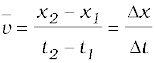 (3.1)
where x2 and x1 are the positions of the object at time t2and t1, respectively. Here the bar over the symbol for velocity is a standard notation used to indicate an average quantity. The SI unit for velocity is m/s or m s–1, although km h–1 is used in many everyday applications.

Like displacement, average velocity is also a vector quantity. But as explained earlier, for motion in a straight line, the directional aspect of the vector can be taken care of by + and – signs and we do not have to use the vector notation for velocity in this chapter.
Consider the motion of the car in Fig. 3.3. The portion of the x-t graph between t = 0 s and t = 8 s is blown up and shown in Fig. 3.4. As seen from the plot, the average velocity of the car between time t = 5 s and t = 7 s is :
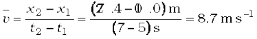
Geometrically, this is the slope of the straight line P1P2 connecting the initial position 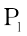 to the final position P2 as shown in Fig. 3.4.
The average velocity can be positive or negative depending upon the sign of the displacement. It is zero if the displacement is zero. Fig. 3.5 shows the x-t graphs for an object, moving with positive velocity (Fig. 3.5a), moving with negative velocity (Fig. 3.5b) and at rest (Fig. 3.5c).
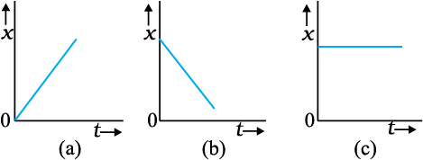
Fig. 3.5 Position-time graph for an object (a) moving with positive velocity, (b) moving with negative velocity, and (c) at rest.
Average velocity as defined above involves only the displacement of the object. We have seen earlier that the magnitude of displacement may be different from the actual path length. To describe the rate of motion over the actual path, we introduce another quantity called average speed.
Average speed is defined as the total path length travelled divided by the total time interval during which the motion has taken place :
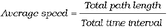 (3.2)
Average speed has obviously the same unit (m s–1) as that of velocity. But it does not tell us in what direction an object is moving. Thus, it is always positive (in contrast to the average velocity which can be positive or negative). If the motion of an object is along a straight line and in the same direction, the magnitude of displacement is equal to the total path length. In that case, the magnitude of average velocity is equal to the average speed. This is not always the case, as you will see in the following example.
Example 3.1 A car is moving along a straight line, say OP in Fig. 3.1. It moves from O to P in 18 s and returns from P to Q in 6.0 s. What are the average velocity and average speed of the car in going (a) from O to P ? and (b) from O to P and back to Q ?
Answer (a)
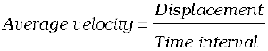
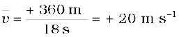

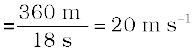
Thus, in this case the average speed is equal to the magnitude of the average velocity.
(b) In this case,
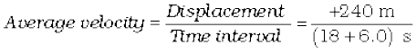
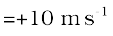
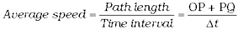
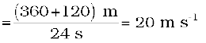
Thus, in this case the average speed is not equal to the magnitude of the average velocity. This happens because the motion here involves change in direction so that the path length is greater than the magnitude of displacement. This shows that speed is, in general, greater than the magnitude of the velocity. If the car in Example 3.1 moves from O to P and comes back to O in the same time interval, average speed is 20 m/s but the average velocity is zero !
3.4 Instantaneous velocity and speed
The average velocity tells us how fast an object has been moving over a given time interval but does not tell us how fast it moves at different instants of time during that interval. For this, we define instantaneous velocity or simply velocity v at an instant t.
The velocity at an instant is defined as the limit of the average velocity as the time interval ∆t becomes infinitesimally small. In other words,
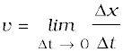 (3.3a)
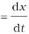 (3.3b)
where the symbol 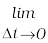 stands for the operation of taking limit as ∆t0 of the quantity on its right. In the language of calculus, the quantity on the right hand side of Eq. (3.3a) is the differential coefficient of x with respect to t and is denoted by  (see Appendix 3.1). It is the rate of change of position with respect to time, at that instant.
(see Appendix 3.1). It is the rate of change of position with respect to time, at that instant.
We can use Eq. (3.3a) for obtaining the value of velocity at an instant either graphically or numerically. Suppose that we want to obtain graphically the value of velocity at time t = 4 s (point P) for the motion of the car represented in Fig. 3.3. The figure has been redrawn in Fig.3.6 choosing different scales to facilitate the calculation. Let us take ∆t = 2 s centred at t = 4 s. Then, by the definition of the average velocity, the slope of line P1P2 ( Fig. 3.6) gives the value of average velocity over the interval 3 s to 5 s. Now, we decrease the value of ∆t from 2 s to 1 s.

Fig. 3.6 Determining velocity from position-time graph. Velocity at t = 4 s is the slope of the tangent to the graph at that instant.
Then line P1P2 becomes Q1Q2 and its slope gives the value of the average velocity over the interval 3.5 s to 4.5 s. In the limit ∆t → 0, the line P1P2 becomes tangent to the position-time curve at the point P and the velocity at t = 4 s is given by the slope of the tangent at that point. It is difficult to show this process graphically. But if we use numerical method to obtain the value of the velocity, the meaning of the limiting process becomes clear. For the graph shown in Fig. 3.6, x = 0.08 t3. Table 3.1 gives the value of ∆x/∆t calculated for ∆t equal to 2.0 s, 1.0 s, 0.5 s, 0.1 s and 0.01 s centred at t = 4.0 s. The second and third columns give the value of t1= 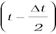 and  and the fourth and the fifth columns give the corresponding values of x, i.e. x (t1) = 0.08 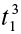 and x (t2) = 0.08 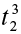. The sixth column lists the difference ∆x = x (t2) – x (t1) and the last column gives the ratio of ∆x and ∆t, i.e. the average velocity corresponding to the value of ∆t listed in the first column.
and the fourth and the fifth columns give the corresponding values of x, i.e. x (t1) = 0.08 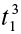 and x (t2) = 0.08 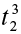. The sixth column lists the difference ∆x = x (t2) – x (t1) and the last column gives the ratio of ∆x and ∆t, i.e. the average velocity corresponding to the value of ∆t listed in the first column.
We see from Table 3.1 that as we decrease the value of ∆t from 2.0 s to 0.010 s, the value of the average velocity approaches the limiting value 3.84 m s–1 which is the value of velocity at t = 4.0 s, i.e. the value of 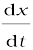 at t = 4.0 s. In this manner, we can calculate velocity at each instant for motion of the car shown in Fig. 3.3. For this case, the variation of velocity with time is found to be as shown in Fig. 3.7.

Fig. 3.7 Velocity–time graph corresponding to motion shown in Fig. 3.3.
The graphical method for the determination of the instantaneous velocity is always not a convenient method. For this, we must carefully plot the position–time graph and calculate the value of average velocity as ∆t becomes smaller and smaller. It is easier to calculate the value of velocity at different instants if we have data of positions at different instants or exact expression for the position as a function of time. Then, we calculate ∆x/∆t from the data for decreasing the value of ∆t and find the limiting value as we have done in Table 3.1 or use differential calculus for the given expression and calculate  at different instants as done in the following example.
at different instants as done in the following example.
Table 3.1 Limiting value of 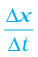 at t = 4 s

Example 3.2 The position of an object moving along x-axis is given by x = a + bt2 where a = 8.5 m, b = 2.5 m s–2 and t is measured in seconds. What is its velocity at t = 0 s and t = 2.0 s. What is the average velocity between t = 2.0 s and t = 4.0 s ?
Answer In notation of differential calculus, the velocity is
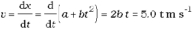
At t = 0 s, v = 0 m s–1 and at t = 2.0 s, v = 10 m s-1 .
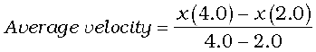

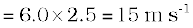
From Fig. 3.7, we note that during the period t =10 s to 18 s the velocity is constant. Between period t =18 s to t = 20 s, it is uniformly decreasing and during the period t = 0 s to t = 10 s, it is increasing. Note that for uniform motion, velocity is the same as the average velocity at all instants.
Instantaneous speed or simply speed is the magnitude of velocity. For example, a velocity of + 24.0 ms–1 and a velocity of – 24.0 ms–1 — both have an associated speed of 24.0 ms-1. It should be noted that though average speed over a finite interval of time is greater or equal to the magnitude of the average velocity, instantaneous speed at an instant is equal to the magnitude of the instantaneous velocity at that instant. Why so ?
3.5 Acceleration
The velocity of an object, in general, changes during its course of motion. How to describe this change? Should it be described as the rate of change in velocity with distance or with time ? This was a problem even in Galileo’s time. It was first thought that this change could be described by the rate of change of velocity with distance. But, through his studies of motion of freely falling objects and motion of objects on an inclined plane, Galileo concluded that the rate of change of velocity with time is a constant of motion for all objects in free fall. On the other hand, the change in velocity with distance is not constant – it decreases with the increasing distance of fall. This led to the concept of acceleration as the rate of change of velocity with time.
The average acceleration  over a time interval is defined as the change of velocity divided by the time interval :
over a time interval is defined as the change of velocity divided by the time interval :
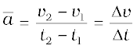 (3.4)
where v2 and v1 are the instantaneous velocities or simply velocities at time t2 and t1 . It is the average change of velocity per unit time. The SI unit of acceleration is m s–2 .
On a plot of velocity versus time, the average acceleration is the slope of the straight line connecting the points corresponding to (v2, t2) and (v1, t1). The average acceleration for velocity-time graph shown in Fig. 3.7 for different time intervals 0 s - 10 s, 10 s – 18 s, and 18 s – 20 s are :
0 s - 10 s 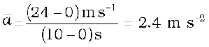
10 s - 18 s 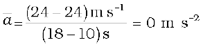
18 s - 20 s 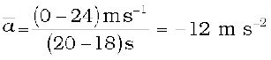
a (m s–2)

Fig. 3.8 Acceleration as a function of time for motion represented in Fig. 3.3.
Instantaneous acceleration is defined in the same way as the instantaneous velocity :
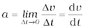 (3.5)
The acceleration at an instant is the slope of the tangent to the v–t curve at that instant. For the v–t curve shown in Fig. 3.7, we can obtain acceleration at every instant of time. The resulting a – t curve is shown in Fig. 3.8. We see that the acceleration is nonuniform over the period 0 s to 10 s. It is zero between 10 s and 18 s and is constant with value –12 ms–2 between 18 s and 20 s. When the acceleration is uniform, obviously, it equals the average acceleration over that period.
Since velocity is a quantity having both magnitude and direction, a change in velocity may involve either or both of these factors. Acceleration, therefore, may result from a change in speed (magnitude), a change in direction or changes in both. Like velocity, acceleration can also be positive, negative or zero. Position-time graphs for motion with positive, negative and zero acceleration are shown in Figs. 3.9 (a), (b) and (c), respectively. Note that the graph curves upward for positive acceleration; downward for negative acceleration and it is a straight line for zero acceleration. As an exercise, identify in Fig. 3.3, the regions of the curve that correspond to these three cases.
Although acceleration can vary with time, our study in this chapter will be restricted to motion with constant acceleration. In this case, the average acceleration equals the constant value of acceleration during the interval. If the velocity of an object is vo at t = 0 and v at time t, we have
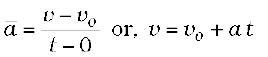 (3.6)
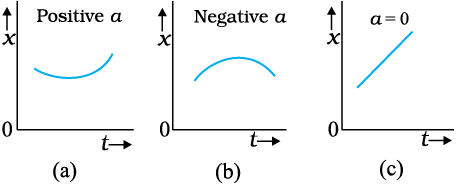
Fig. 3.9 Position-time graph for motion with
(a) positive acceleration; (b) negative acceleration, and (c) zero acceleration.
Let us see how velocity-time graph looks like for some simple cases. Fig. 3.10 shows velocity-time graph for motion with constant acceleration for the following cases :
(a) An object is moving in a positive direction with a positive acceleration, for example the motion of the car in Fig. 3.3 between t = 0 s and t = 10 s.
(b) An object is moving in positive direction with a negative acceleration, for example, motion of the car in Fig 3.3 between
t = 18 s and 20 s.
(c) An object is moving in negative direction with a negative acceleration, for example the motion of a car moving from O in Fig. 3.1 in negative x-direction with increasing speed.
(d) An object is moving in positive direction till time t1, and then turns back with the same negative acceleration, for example the motion of a car from point O to point Q in Fig. 3.1 till time t1 with decreasing speed and turning back and moving with the same negative acceleration.
An interesting feature of a velocity-time graph for any moving object is that the area under the curve represents the displacement over a given time interval. A general proof of this statement requires use of calculus. We can, however, see that it is true for the simple case of an object moving with constant velocity u. Its velocity-time graph is as shown in Fig. 3.11.

Fig. 3.10 Velocity–time graph for motions with constant acceleration. (a) Motion in positive direction with positive acceleration, (b) Motion in positive direction with negative acceleration, (c) Motion in negative direction with negative acceleration, (d) Motion of an object with negative acceleration that changes direction at time t1. Between times 0 to t1, its moves in positive x - direction and between t1 and t2 it moves in the opposite direction.

Fig. 3.11 Area under v–t curve equals displacement of the object over a given time interval.
The v-t curve is a straight line parallel to the time axis and the area under it between t = 0 and t = T is the area of the rectangle of height u and base T. Therefore, area = u × T = uT which is the displacement in this time interval. How come in this case an area is equal to a distance? Think! Note the dimensions of quantities on the two coordinate axes, and you will arrive at the answer.
Note that the x-t, v-t, and a-t graphs shown in several figures in this chapter have sharp kinks at some points implying that the functions are not differentiable at these points. In any realistic situation, the functions will be differentiable at all points and the graphs will be smooth.
What this means physically is that acceleration and velocity cannot change values abruptly at an instant. Changes are always continuous.
3.6 Kinematic eQUations for uniformly accelerated motion
For uniformly accelerated motion, we can derive some simple equations that relate displacement (x), time taken (t), initial velocity (v0), final velocity (v) and acceleration (a). Equation (3.6) already obtained gives a relation between final and initial velocities v and v0 of an object moving with uniform acceleration a :
v = v0 + at (3.6)
This relation is graphically represented in Fig. 3.12.
The area under this curve is :
Area between instants 0 and t = Area of triangle ABC + Area of rectangle OACD
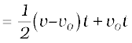
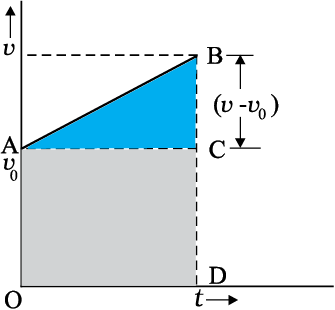
Fig. 3.12 Area under v-t curve for an object with uniform acceleration.
As explained in the previous section, the area under v-t curve represents the displacement. Therefore, the displacement x of the object is :
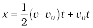 (3.7)
But 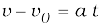
Therefore, 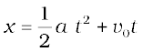
or, (3.8)
Equation (3.7) can also be written as
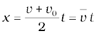 (3.9a)
where,
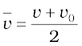 (constant acceleration only) (3.9b)
Equations (3.9a) and (3.9b) mean that the object has undergone displacement x with an average velocity equal to the arithmetic average of the initial and final velocities.
From Eq. (3.6), t = (v – v0)/a. Substituting this in Eq. (3.9a), we get
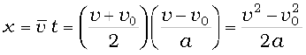
 (3.10)
(3.10)
This equation can also be obtained by substituting the value of t from Eq. (3.6) into Eq. (3.8). Thus, we have obtained three important equations :
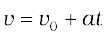
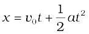
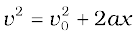 (3.11a)
connecting five quantities v0, v, a, t and x. These are kinematic equations of rectilinear motion for constant acceleration.
The set of Eq. (3.11a) were obtained by assuming that at t = 0, the position of the particle, x is 0. We can obtain a more general equation if we take the position coordinate at t = 0 as non-zero, say x0. Then Eqs. (3.11a) are modified (replacing x by x – x0 ) to :

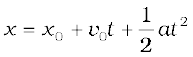 (3.11b)
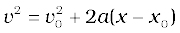 (3.11c)
Example 3.3 Obtain equations of motion for constant acceleration using method of calculus.
Answer By definition
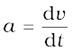
dv = a dt
Integrating both sides
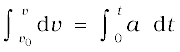
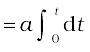 (a is constant)
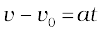
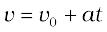
Further, 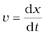
dx = v dt
Integrating both sides
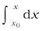
x =
We can write
or, v dv = a dx
Integrating both sides,
The advantage of this method is that it can be used for motion with non-uniform acceleration
also.
Now, we shall use these equations to some important cases.
Example 3.4 A ball is thrown vertically upwards with a velocity of 20 m s–1 from the top of a multistorey building. The height of the point from where the ball is thrown is 25.0 m from the ground. (a) How high will the ball rise ? and (b) how long will it be before the ball hits the ground? Take g = 10 m s–2.
Answer (a) Let us take the y-axis in the vertically upward direction with zero at the ground, as shown in Fig. 3.13.
Now vo = + 20 m s–1,
a = – g = –10 m s–2,
v = 0 m s–1
If the ball rises to height y from the point of launch, then using the equation
we get
0 = (20)2 + 2(–10)(y – y0)
Solving, we get, (y – y0) = 20 m.
(b) We can solve this part of the problem in two ways. Note carefully the methods used.
Fig. 3.13
FIRST METHOD : In the first method, we split the path in two parts : the upward motion (A to B) and the downward motion (B to C) and calculate the corresponding time taken t1 and t2. Since the velocity at B is zero, we have :
v = vo + at
0 = 20 – 10t1
Or, t1 = 2 s
This is the time in going from A to B. From B, or the point of the maximum height, the ball falls freely under the acceleration due to gravity. The ball is moving in negative y direction. We use equation

We have, y0 = 45 m, y = 0, v0 = 0, a = – g = –10 m s–2
0 = 45 + (½) (–10) t22
Solving, we get t2 = 3 s
Therefore, the total time taken by the ball before it hits the ground = t1 + t2 = 2 s + 3 s = 5 s.
SECOND METHOD : The total time taken can also be calculated by noting the coordinates of initial and final positions of the ball with respect to the origin chosen and using equation
Now y0 = 25 m y = 0 m
vo = 20 m s-1, a = –10m s–2, t = ?
0 = 25 +20 t + (½) (-10) t2
Or, 5t2 – 20t – 25 = 0
Solving this quadratic equation for t, we get
t = 5s
Note that the second method is better since we do not have to worry about the path of the motion as the motion is under constant acceleration.
Example 3.5 Free-fall : Discuss the motion of an object under free fall. Neglect air resistance.
Answer An object released near the surface of the Earth is accelerated downward under the influence of the force of gravity. The magnitude of acceleration due to gravity is represented by g. If air resistance is neglected, the object is said to be in free fall. If the height through which the object falls is small compared to the earth’s radius, g can be taken to be constant, equal to 9.8 m s–2. Free fall is thus a case of motion with uniform acceleration.
We assume that the motion is in y-direction, more correctly in –y-direction because we choose upward direction as positive. Since the acceleration due to gravity is always downward, it is in the negative direction and we have
a = – g = – 9.8 m s–2
The object is released from rest at y = 0. Therefore, v0 = 0 and the equations of motion become:
v = 0 – g t = –9.8 t m s–1
y = 0 – ½ g t2 = –4.9 t2 m
v2 = 0 – 2 g y = –19.6 y m2 s–2
These equations give the velocity and the distance travelled as a function of time and also the variation of velocity with distance. The variation of acceleration, velocity, and distance, with time have been plotted in Fig. 3.14(a), (b) and (c).
Fig. 3.14 Motion of an object under free fall. (a) Variation of acceleration with time.
(b) Variation of velocity with time.
(c) Variation of distance with time
Example 3.6 Galileo’s law of odd numbers : “The distances traversed, during equal intervals of time, by a body falling from rest, stand to one another in the same ratio as the odd numbers beginning with unity [namely, 1: 3: 5: 7…...].” Prove it.
Answer Let us divide the time interval of motion of an object under free fall into many equal intervals  and find out the distances traversed during successive intervals of time. Since initial velocity is zero, we have
and find out the distances traversed during successive intervals of time. Since initial velocity is zero, we have
Using this equation, we can calculate the position of the object after different time intervals, 0,  , 2
, 2 , 3
, 3 … which are given in second column of Table 3.2. If we take
… which are given in second column of Table 3.2. If we take
(–1/ 2) g2 as y0 — the position coordinate after first time interval  , then third column gives the positions in the unit of yo. The fourth column gives the distances traversed in successive
, then third column gives the positions in the unit of yo. The fourth column gives the distances traversed in successive  s. We find that the distances are in the simple ratio 1: 3: 5: 7: 9: 11… as shown in the last column. This law was established by Galileo Galilei (1564-1642) who was the first to make quantitative studies of free fall.
s. We find that the distances are in the simple ratio 1: 3: 5: 7: 9: 11… as shown in the last column. This law was established by Galileo Galilei (1564-1642) who was the first to make quantitative studies of free fall.
Table 3.2

Example 3.7 Stopping distance of vehicles : When brakes are applied to a moving vehicle, the distance it travels before stopping is called stopping distance. It is an important factor for road safety and depends on the initial velocity (v0) and the braking capacity, or deceleration, –a that is caused by the braking. Derive an expression for stopping distance of a vehicle in terms of vo and a.
Answer Let the distance travelled by the vehicle before it stops be ds. Then, using equation of motion v2 = vo2 + 2 ax, and noting that v = 0, we have the stopping distance
Thus, the stopping distance is proportional to the square of the initial velocity. Doubling the initial velocity increases the stopping distance by a factor of 4 (for the same deceleration).
For the car of a particular make, the braking distance was found to be 10 m, 20 m, 34 m and 50 m corresponding to velocities of 11, 15, 20 and 25 m/s which are nearly consistent with the above formula.
Stopping distance is an important factor considered in setting speed limits, for example, in school zones.
Example 3.8 Reaction time : When a situation demands our immediate action, it takes some time before we really respond. Reaction time is the time a person takes to observe, think and act. For example, if a person is driving and suddenly a boy appears on the road, then the time elapsed before he slams the brakes of the car is the reaction time. Reaction time depends on complexity of the situation and on an individual.
You can measure your reaction time by a simple experiment. Take a ruler and ask your friend to drop it vertically through the gap between your thumb and forefinger (Fig. 3.15). After you catch it, find the distance d travelled by the ruler. In a particular case, d was found to be 21.0 cm. Estimate reaction time.

Fig. 3.15 Measuring the reaction time.
Answer The ruler drops under free fall. Therefore, vo = 0, and a = –g = –9.8 m s–2. The distance travelled d and the reaction time tr are related by
Or,
Given d = 21.0 cm and g = 9.8 m s–2the reaction time is
3.7 Relative velocity
You must be familiar with the experience of travelling in a train and being overtaken by another train moving in the same direction as you are. While that train must be travelling faster than you to be able to pass you, it does seem slower to you than it would be to someone standing on the ground and watching both the trains. In case both the trains have the same velocity with respect to the ground, then to you the other train would seem to be not moving at all. To understand such observations, we now introduce the concept of relative velocity.
Consider two objects A and B moving uniformly with average velocities vA and vB in one dimension, say along x-axis. (Unless otherwise specified, the velocities mentioned in this chapter are measured with reference to the ground). If xA (0) and xB (0) are positions of objects A and B, respectively at time t = 0, their positions xA (t) and xB (t) at time t are given by:
xA (t ) = xA (0) + vA t (3.12a)
xB (t) = xB (0) + vB t (3.12b)
Then, the displacement from object A to object B is given by
xBA(t) = xB (t) – xA (t)
= [ xB (0) – xA (0) ] + (vB – vA) t. (3.13)
Equation (3.13) is easily interpreted. It tells us that as seen from object A, object B has a velocity vB – vA because the displacement from A to B changes steadily by the amount vB – vA in each unit of time. We say that the velocity of object B relative to object A is vB – vA :
vBA = vB – vA (3.14a)
Similarly, velocity of object A relative to object B is:
vAB = vA – vB (3.14b)
This shows: vBA = – vAB (3.14c)
Fig. 3.16 Position-time graphs of two objects with equal velocities.
Now we consider some special cases : (a) If vB = vA, vB – vA = 0. Then, from Eq. (3.13), xB (t) – xA (t) = xB (0) – xA (0). Therefore, the two objects stay at a constant distance (xB (0) – xA (0)) apart, and their position–time graphs are straight lines parallel to each other as shown in Fig. 3.16. The relative velocity vAB or vBA is zero in this case.
(b) If vA > vB, vB – vA is negative. One graph is steeper than the other and they meet at a common point. For example, suppose vA = 20 m s-1 and xA (0) = 10 m; and vB = 10 m s-1, xB (0) = 40 m; then the time at which they meet is t = 3 s (Fig. 3.17). At this instant they are both at a position xA (t) = xB (t) = 70 m. Thus, object A overtakes object B at this time. In this case,vBA = 10 m s–1 – 20 m s–1 = – 10 m s–1=– vAB.
(c) Suppose vA and vB are of opposite signs. For example, if in the above example object A is moving with 20 m s–1 starting at xA(0) = 10 m and object B is moving with – 10 m s–1 starting at xB (0) = 40 m, the two objects meet at t = 1 s (Fig. 3.18). The velocity of B relative to A, vBA = [–10 – (20)] m s–1 = –30 m s–1 = – vAB. In this case, the magnitude of vBA or vAB ( = 30 m s–1) is greater than the magnitude of velocity of A or that of B. If the objects under consideration are two trains, then for a person sitting on either of the two, the other train seems to go very fast.
Note that Eq. (3.14) are valid even if vA and vB represent instantaneous velocities.
Fig. 3.17 Position-time graphs of two objects with unequal velocities, showing the time of meeting.

Fig. 3.18 Position-time graphs of two objects with velocities in opposite directions, showing the time of meeting.
Example 3.9 Two parallel rail tracks run north-south. Train A moves north with a speed of 54 km h–1, and train B moves south with a speed of 90 km h–1. What is the
(a) velocity of B with respect to A ?,
(b) velocity of ground with respect to B ?, and
(c) velocity of a monkey running on the roof of the train A against its motion (with a velocity of 18 km h–1 with respect to the train A) as observed by a man standing on the ground ?
Answer Choose the positive direction of x-axis to be from south to north. Then,
vA = + 54 km h–1 = 15 m s–1
vB = – 90 km h–1 = – 25 m s–1
Relative velocity of B with respect to A = vB – vA= – 40 m s–1 , i.e. the train B appears to A to move with a speed of 40 m s–1 from north to south.
Relative velocity of ground with respect to
B = 0 – vB = 25 m s–1.
In (c), let the velocity of the monkey with respect to ground be vM. Relative velocity of the monkey with respect to A,
vMA = vM – vA = –18 km h–1 =–5 ms–1. Therefore,
vM = (15 – 5) m s–1 = 10 m s–1.
1. An object is said to be in motion if its position changes with time. The position of the object can be specified with reference to a conveniently chosen origin. For motion in a straight line, position to the right of the origin is taken as positive and to the left as negative.
2. Path length is defined as the total length of the path traversed by an object.
3. Displacement is the change in position : ∆x = x2 – x1. Path length is greater or equal to the magnitude of the displacement between the same points.
4. An object is said to be in uniform motion in a straight line if its displacement is equal in equal intervals of time. Otherwise, the motion is said to be non-uniform.
5. Average velocity is the displacement divided by the time interval in which the displacement occurs :
On an x-t graph, the average velocity over a time interval is the slope of the line connecting the initial and final positions corresponding to that interval.
6. Average Speed is the ratio of total path length traversed and the corresponding time interval.
The average speed of an object is greater or equal to the magnitude of the average velocity over a given time interval.
7. Instantaneous velocity or simply velocity is defined as the limit of the average velocity as the time interval ∆t becomes infinitesimally small :
The velocity at a particular instant is equal to the slope of the tangent drawn on position-time graph at that instant.
8. Average acceleration is the change in velocity divided by the time interval during which the change occurs :
9. Instantaneous acceleration is defined as the limit of the average acceleration as the time interval ∆t goes to zero :

The acceleration of an object at a particular time is the slope of the velocity-time graph at that instant of time. For uniform motion, acceleration is zero and the x-t graph is a straight line inclined to the time axis and the v-t graph is a straight line parallel to the time axis. For motion with uniform acceleration, x-t graph is a parabola while the v-t graph is a straight line inclined to the time axis.
10. The area under the velocity-time curve between times t1 and t2 is equal to the displacement of the object during that interval of time.
11. For objects in uniformly accelerated rectilinear motion, the five quantities, displacement x, time taken t, initial velocity v0, final velocity v and acceleration a are related by a set of simple equations called kinematic equations of motion :
v = v0 + at
if the position of the object at time t = 0 is 0. If the particle starts at x = x0 , x in above equations is replaced by (x – x0).

POINTS TO PONDER
1. The path length traversed by an object between two points is, in general, not the same as the magnitude of displacement. The displacement depends only on the end points; the path length (as the name implies) depends on the actual path. In one dimension, the two quantities are equal only if the object does not change its direction during the course of motion. In all other cases, the path length is greater than the magnitude of displacement.
2. In view of point 1 above, the average speed of an object is greater than or equal to the magnitude of the average velocity over a given time interval. The two are equal only if the path length is equal to the magnitude of displacement.
3. The origin and the positive direction of an axis are a matter of choice. You should first specify this choice before you assign signs to quantities like displacement, velocity and acceleration.
4. If a particle is speeding up, acceleration is in the direction of velocity; if its speed is decreasing, acceleration is in the direction opposite to that of the velocity. This statement is independent of the choice of the origin and the axis.
5. The sign of acceleration does not tell us whether the particle’s speed is increasing or decreasing. The sign of acceleration (as mentioned in point 3) depends on the choice of the positive direction of the axis. For example, if the vertically upward direction is chosen to be the positive direction of the axis, the acceleration due to gravity is negative. If a particle is falling under gravity, this acceleration, though negative, results in increase in speed. For a particle thrown upward, the same negative acceleration (of gravity) results in decrease in speed.
6. The zero velocity of a particle at any instant does not necessarily imply zero acceleration at that instant. A particle may be momentarily at rest and yet have non-zero acceleration. For example, a particle thrown up has zero velocity at its uppermost point but the acceleration at that instant continues to be the acceleration due to gravity.
7. In the kinematic equations of motion [Eq. (3.11)], the various quantities are algebraic, i.e. they may be positive or negative. The equations are applicable in all situations (for one dimensional motion with constant acceleration) provided the values of different quantities are substituted in the equations with proper signs.
8. The definitions of instantaneous velocity and acceleration (Eqs. (3.3) and (3.5)) are exact and are always correct while the kinematic equations (Eq. (3.11)) are true only for motion in which the magnitude and the direction of acceleration are constant during the course of motion.
Exercises
3.1 In which of the following examples of motion, can the body be considered approximately a point object:
(a) a railway carriage moving without jerks between two stations.
(b) a monkey sitting on top of a man cycling smoothly on a circular track.
(c) a spinning cricket ball that turns sharply on hitting the ground.
(d) a tumbling beaker that has slipped off the edge of a table.
3.2 The position-time (x-t) graphs for two children A and B returning from their school O to their homes P and Q respectively are shown in Fig. 3.19. Choose the correct entries in the brackets below ;
(a) (A/B) lives closer to the school than (B/A)
(b) (A/B) starts from the school earlier than (B/A)
(c) (A/B) walks faster than (B/A)
(d) A and B reach home at the (same/different) time
(e) (A/B) overtakes (B/A) on the road (once/twice).
Fig. 3.19
3.3 A woman starts from her home at 9.00 am, walks with a speed of 5 km h–1 on a straight road up to her office 2.5 km away, stays at the office up to 5.00 pm, and returns home by an auto with a speed of 25 km h–1. Choose suitable scales and plot the x-t graph of her motion.
3.4 A drunkard walking in a narrow lane takes 5 steps forward and 3 steps backward, followed again by 5 steps forward and 3 steps backward, and so on. Each step is 1 m long and requires 1 s. Plot the x-t graph of his motion. Determine graphically and otherwise how long the drunkard takes to fall in a pit 13 m away from the start.
3.5 A jet airplane travelling at the speed of 500 km h–1 ejects its products of combustion at the speed of 1500 km h–1 relative to the jet plane. What is the speed of the latter with respect to an observer on the ground ?
3.6 A car moving along a straight highway with speed of 126 km h–1 is brought to a stop within a distance of 200 m. What is the retardation of the car (assumed uniform), and how long does it take for the car to stop ?
3.7 Two trains A and B of length 400 m each are moving on two parallel tracks with a uniform speed of 72 km h–1 in the same direction, with A ahead of B. The driver of B decides to overtake A and accelerates by 1 m s–2. If after 50 s, the guard of B just brushes past the driver of A, what was the original distance between them ?
3.8 On a two-lane road, car A is travelling with a speed of 36 km h–1. Two cars B and C approach car A in opposite directions with a speed of 54 km h–1 each. At a certain instant, when the distance AB is equal to AC, both being 1 km, B decides to overtake A before C does. What minimum acceleration of car B is required to avoid an accident ?
3.9 Two towns A and B are connected by a regular bus service with a bus leaving in either direction every T minutes. A man cycling with a speed of 20 km h–1 in the direction A to B notices that a bus goes past him every 18 min in the direction of his motion, and every 6 min in the opposite direction. What is the period T of the bus service and with what speed (assumed constant) do the buses ply on the road?
3.10 A player throws a ball upwards with an initial speed of 29.4 m s–1.
(a) What is the direction of acceleration during the upward motion of the ball ?
(b) What are the velocity and acceleration of the ball at the highest point of its motion ?
(c) Choose the x = 0 m and t = 0 s to be the location and time of the ball at its highest point, vertically downward direction to be the positive direction of x-axis, and give the signs of position, velocity and acceleration of the ball during its upward, and downward motion.
(d) To what height does the ball rise and after how long does the ball return to the player’s hands ? (Take g = 9.8 m s–2 and neglect air resistance).
3.11 Read each statement below carefully and state with reasons and examples, if it is true or false ;
A particle in one-dimensional motion
(a) with zero speed at an instant may have non-zero acceleration at that instant
(b) with zero speed may have non-zero velocity,
(c) with constant speed must have zero acceleration,
(d) with positive value of acceleration must be speeding up.
3.12 A ball is dropped from a height of 90 m on a floor. At each collision with the floor, the ball loses one tenth of its speed. Plot the speed-time graph of its motion between t = 0 to 12 s.
3.13 Explain clearly, with examples, the distinction between :
(a) magnitude of displacement (sometimes called distance) over an interval of time, and the total length of path covered by a particle over the same interval;
(b) magnitude of average velocity over an interval of time, and the average speed over the same interval. [Average speed of a particle over an interval of time is defined as the total path length divided by the time interval]. Show in both (a) and (b) that the second quantity is either greater than or equal to the first. When is the equality sign true ? [For simplicity, consider one-dimensional motion only].
3.14 A man walks on a straight road from his home to a market 2.5 km away with a speed of 5 km h–1. Finding the market closed, he instantly turns and walks back home with a speed of 7.5 km h–1. What is the
(a) magnitude of average velocity, and
(b) average speed of the man over the interval of time (i) 0 to 30 min, (ii) 0 to 50 min, (iii) 0 to 40 min ? [Note: You will appreciate from this exercise why it is better to define average speed as total path length divided by time, and not as magnitude of average velocity. You would not like to tell the tired man on his return home that his average speed was zero !]
3.15 In Exercises 3.13 and 3.14, we have carefully distinguished between average speed and magnitude of average velocity. No such distinction is necessary when we consider instantaneous speed and magnitude of velocity. The instantaneous speed is always equal to the magnitude of instantaneous velocity. Why ?
3.16 Look at the graphs (a) to (d) (Fig. 3.20) carefully and state, with reasons, which of these cannot possibly represent one-dimensional motion of a particle.

Fig. 3.20
3.17 Figure 3.21 shows the x-t plot of one-dimensional motion of a particle. Is it correct to say from the graph that the particle moves in a straight line for t < 0 and on a parabolic path for t >0 ? If not, suggest a suitable physical context for this graph.
Fig. 3.21
3.18 A police van moving on a highway with a speed of 30 km h–1 fires a bullet at a thief’s car speeding away in the same direction with a speed of 192 km h–1. If the muzzle speed of the bullet is 150 m s–1, with what speed does the bullet hit the thief’s car ? (Note: Obtain that speed which is relevant for damaging the thief’s car).
3.19 Suggest a suitable physical situation for each of the following graphs (Fig 3.22):

Fig. 3.22
3.20 Figure 3.23 gives the x-t plot of a particle executing one-dimensional simple harmonic motion. (You will learn about this motion in more detail in Chapter14). Give the signs of position, velocity and acceleration variables of the particle at
t = 0.3 s, 1.2 s, – 1.2 s.


Fig. 3.24
3.22 Figure 3.25 gives a speed-time graph of a particle in motion along a constant direction. Three equal intervals of time are shown. In which interval is the average acceleration greatest in magnitude ? In which interval is the average speed greatest ? Choosing the positive direction as the constant direction of motion, give the signs of v and a in the three intervals. What are the accelerations at the points A, B, C and D ?

Additional Exercises
3.23 A three-wheeler starts from rest, accelerates uniformly with 1 m s–2 on a straight road for 10 s, and then moves with uniform velocity. Plot the distance covered by the vehicle during the nth second (n = 1,2,3….) versus n. What do you expect this plot to be during accelerated motion : a straight line or a parabola ?
3.24 A boy standing on a stationary lift (open from above) throws a ball upwards with the maximum initial speed he can, equal to 49 m s–1. How much time does the ball take to return to his hands? If the lift starts moving up with a uniform speed of
5 m s-1 and the boy again throws the ball up with the maximum speed he can, how long does the ball take to return to his hands ?
3.25 On a long horizontally moving belt (Fig. 3.26), a child runs to and fro with a speed 9 km h–1 (with respect to the belt) between his father and mother located 50 m apart on the moving belt. The belt moves with a speed of 4 km h–1. For an observer on a stationary platform outside, what is the
(a) speed of the child running in the direction of motion of the belt ?.
(b) speed of the child running opposite to the direction of motion of the belt ?
(c) time taken by the child in (a) and (b) ?
Which of the answers alter if motion is viewed by one of the parents ?

Fig. 3.26
3.26 Two stones are thrown up simultaneously from the edge of a cliff 200 m high with initial speeds of 15 m s–1 and 30 m s–1. Verify that the graph shown in Fig. 3.27 correctly represents the time variation of the relative position of the second stone with respect to the first. Neglect air resistance and assume that the stones do not rebound after hitting the ground. Take g = 10 m s–2. Give the equations for the linear and curved parts of the plot.
Fig. 3.27
3.27 The speed-time graph of a particle moving along a fixed direction is shown in
Fig. 3.28. Obtain the distance traversed by the particle between (a) t = 0 s to 10 s, (b) t = 2 s to 6 s.
What is the average speed of the particle over the intervals in (a) and (b) ?
3.28 The velocity-time graph of a particle in one-dimensional motion is shown in Fig. 3.29 :

Fig. 3.29
Which of the following formulae are correct for describing the motion of the particle over the time-interval t1 to t2:
(a) x(t2 ) = x(t1) + v (t1) (t2 – t1) +(½) a (t2 – t1)2
(b) v(t2 ) = v(t1) + a (t2 – t1)
(c) vaverage = (x(t2) – x(t1))/(t2 – t1)
(d) aaverage = (v(t2) – v(t1))/(t2 – t1)
(e) x(t2 ) = x(t1) + vaverage (t2 – t1) + (½) aaverage (t2 – t1)2
(f) x(t2 ) – x(t1) = area under the v-t curve bounded by the t-axis and the dotted line shown.
APPENDIX 3.1 : ELEMENTS OF CALCULUS
Differential Calculus
Using the concept of ‘differential coefficient’ or ‘derivative’, we can easily define velocity and acceleration. Though you will learn in detail in mathematics about derivatives, we shall introduce this concept in brief in this Appendix so as to facilitate its use in describing physical quantities involved in motion.
Suppose we have a quantity y whose value depends upon a single variable x, and is expressed by an equation defining y as some specific function of x. This is represented as:
y = f (x) (1)
This relationship can be visualised by drawing a graph of function y = f (x) regarding y and x as Cartesian coordinates, as shown in Fig. 3.30 (a).

(b)
Fig. 3.30
Consider the point P on the curve y = f (x) whose coordinates are (x, y) and another point Q where coordinates are (x + ∆x, y + ∆y). The slope of the line joining P and Q is given by:
(2)
Suppose now that the point Q moves along the curve towards P. In this process, ∆y and ∆x decrease and approach zero; though their ratio will not necessarily vanish. What happens to the line PQ as ∆y→ 0, ∆x→ 0. You can see that this line becomes a tangent to the curve at point P as shown in Fig. 3.30(b). This means that tan θ approaches the slope of the tangent at P, denoted by m:
(3)
The limit of the ratio ∆y/∆x as ∆x approaches zero is called the derivative of y with respect to x and is written as dy/dx. It represents the slope of the tangent line to the curve y = f (x) at the point (x, y).
Since y = f (x) and y + ∆y = f (x + ∆x), we can write the definition of the derivative as:
Given below are some elementary formulae for derivatives of functions. In these u (x) and v (x) represent arbitrary functions of x, and a and b denote constant quantities that are independent of x. Derivatives of some common functions are also listed .
;
 ;
;
;
;
; ;
In terms of derivatives, instantaneous velocity and acceleration are defined as
Integral Calculus
You are familiar with the notion of area. The formulae for areas of simple geometrical figures are also known to you. For example, the area of a rectangle is length times breadth and that of a triangle is half of the product of base and height. But how to deal with the problem of determination of area of an irregular figure? The mathematical notion of integral is necessary in connection with such problems.
Let us take a concrete example. Suppose a variable force f (x) acts on a particle in its motion along x - axis from x = a to x = b. The problem is to determine the work done (W) by the force on the particle during the motion. This problem is discussed in detail in Chapter 6.
Figure 3.31 shows the variation of F(x) with x. If the force were constant, work would be simply the area F (b-a) as shown in Fig. 3.31(i). But in the general case, force is varying .

Fig. 3.31
To calculate the area under this curve [Fig. 3.31 (ii)], let us employ the following trick. Divide the interval on x-axis from a to b into a large number (N) of small intervals: x0(=a) to x1, x1 to x2 ; x2 to x3, ................................ xN-1 to xN (=b). The area under the curve is thus divided into N strips. Each strip is approximately a rectangle, since the variation of F(x) over a strip is negligible. The area of the ith strip shown [Fig. 3.31(ii)] is then approximately
where ∆x is the width of the strip which we have taken to be the same for all the strips. You may wonder whether we should put F(xi-1) or the mean of F(xi) and F(xi-1) in the above expression. If we take N to be very very large (N→∞ ), it does not really matter, since then the strip will be so thin that the difference between F(xi) and F(xi-1) is vanishingly small. The total area under the curve then is:
The limit of this sum as N→∞ is known as the integral of F(x) over x from a to b. It is given a special symbol as shown below:
The integral sign looks like an elongated S, reminding us that it basically is the limit of the sum of an infinite number of terms.
A most significant mathematical fact is that integration is, in a sense, an inverse of differentiation. Suppose we have a function g (x) whose derivative is f (x), i.e.
The function g (x) is known as the indefinite integral of f (x) and is denoted as:
An integral with lower and upper limits is known as a definite integral. It is a number. Indefinite integral has no limits; it is a function.
A fundamental theorem of mathematics states that
As an example, suppose f (x) = x2 and we wish to determine the value of the definite integral from x =1 to x = 2. The function g (x) whose derivative is x2 is x3/3. Therefore,
Clearly, to evaluate definite integrals, we need to know the corresponding indefinite integrals. Some common indefinite integrals are

This introduction to differential and integral calculus is not rigorous and is intended to convey to you the basic notions of calculus.